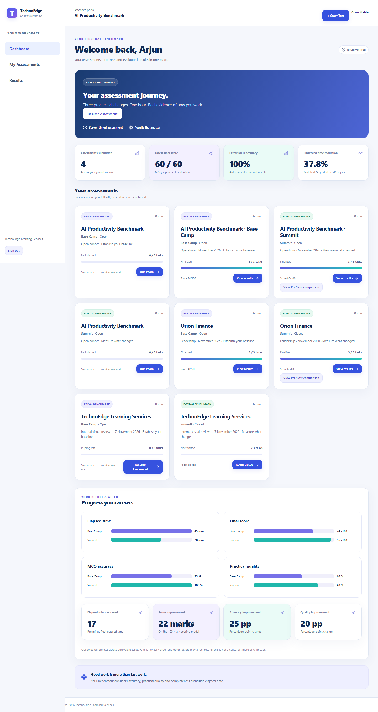
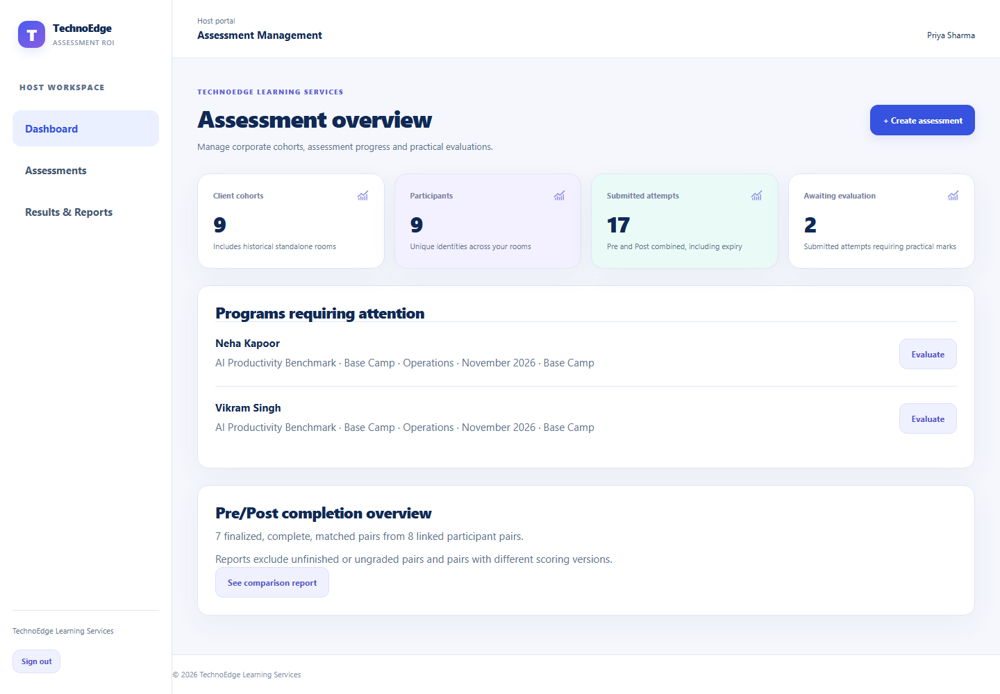
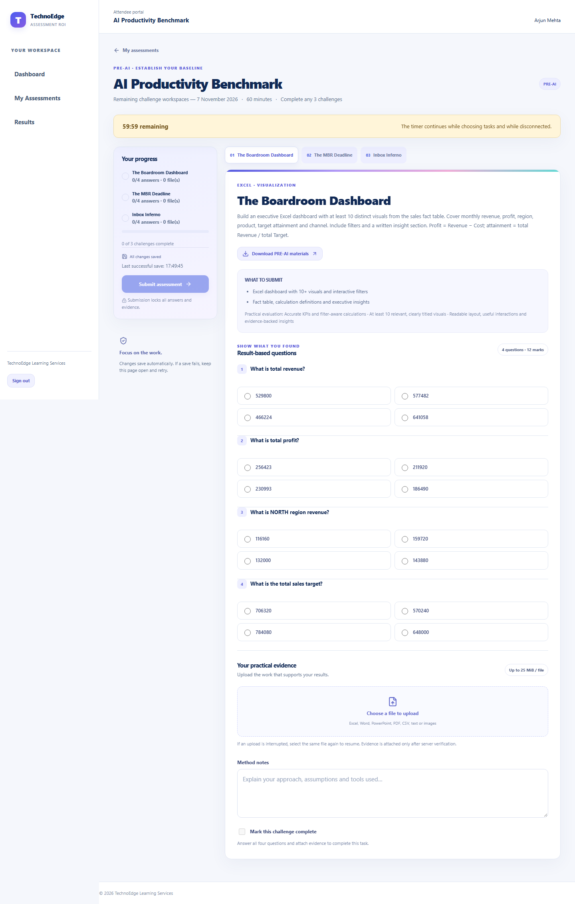
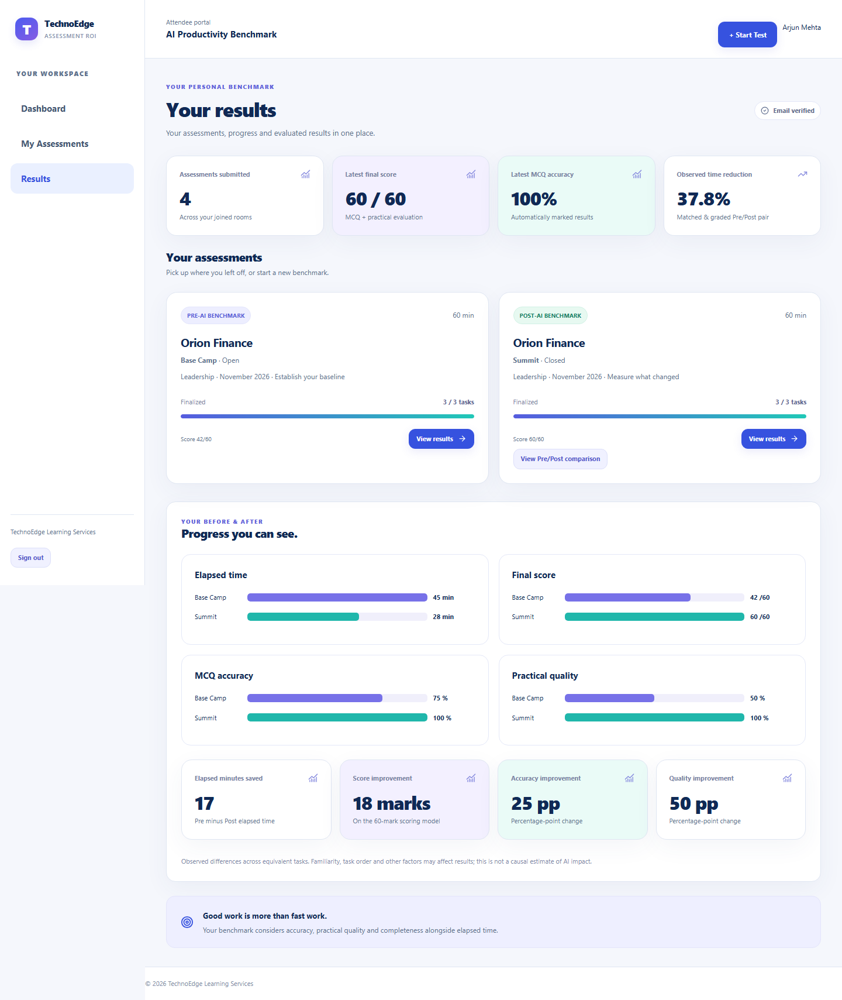

Personal dashboard

Accepted corporate workflows, separate Host and Attendee portals, fixed practical challenges and durable storage integration. These are screenshots of the working local application, captured on 7 November 2026 using synthetic accounts.



